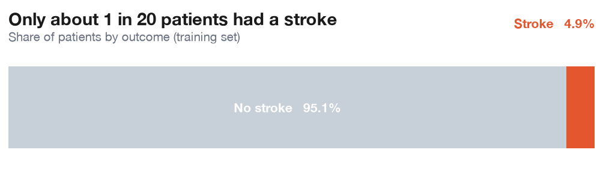
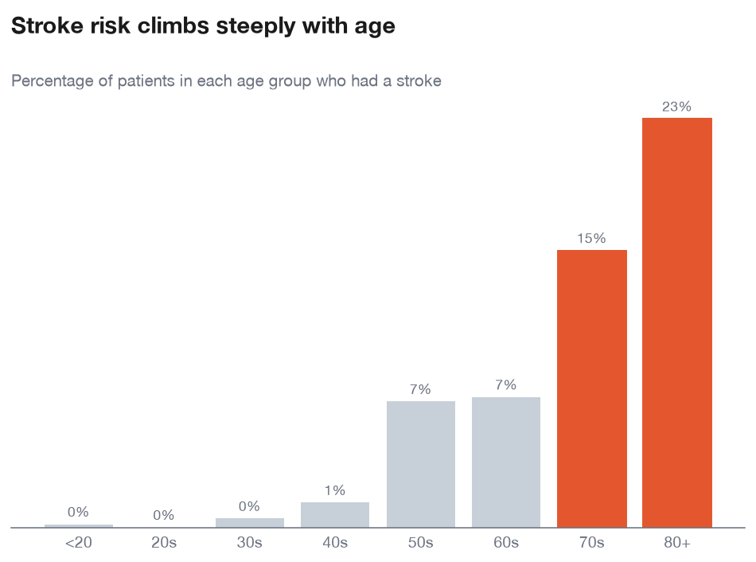
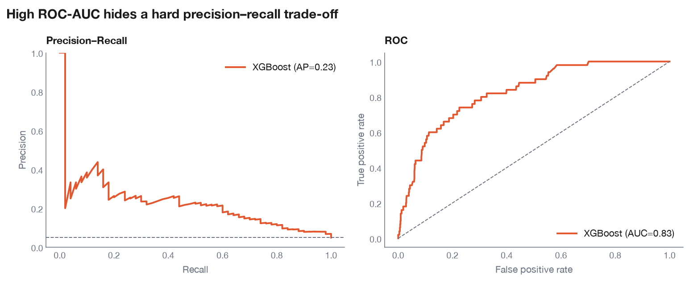
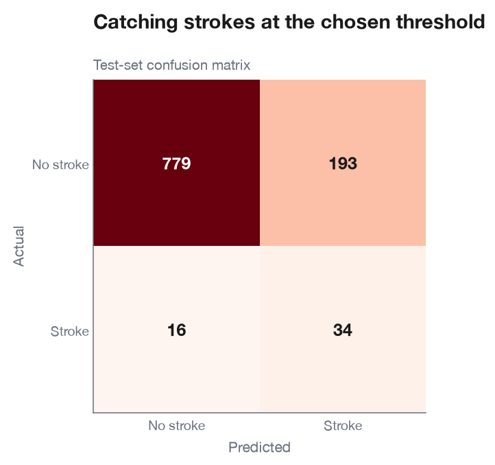
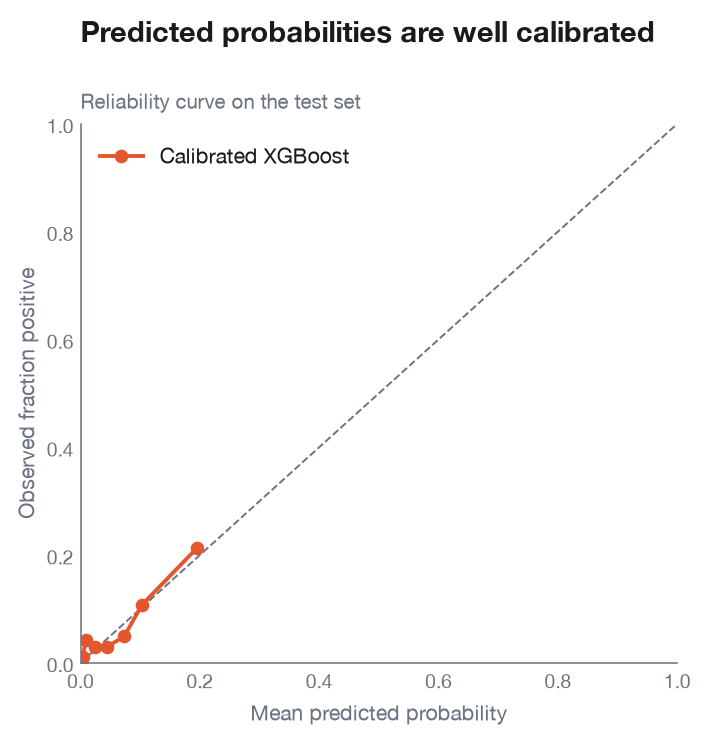
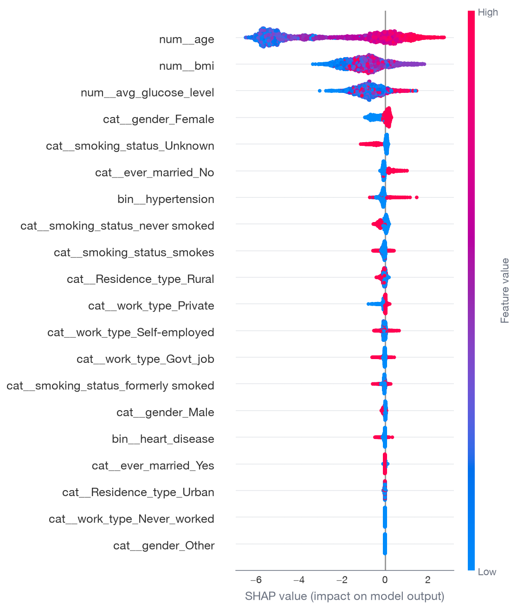
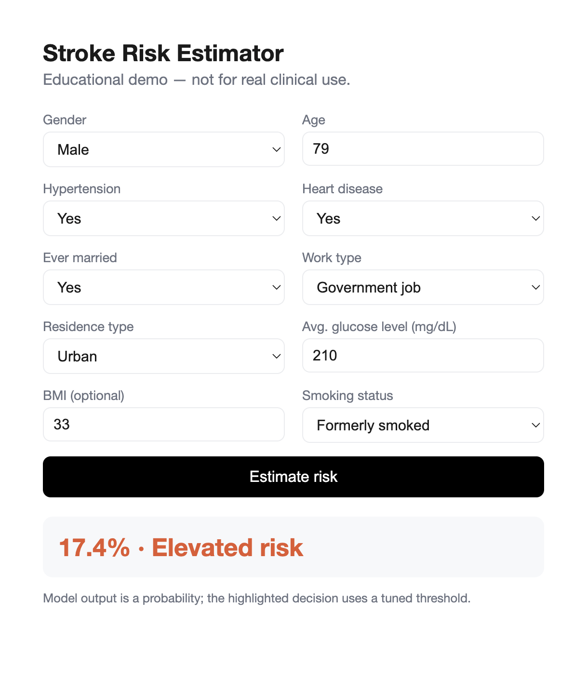

Predicting stroke,
honestly.
An end-to-end machine-learning project — from a leak-free data pipeline to a calibrated, deployed model — built to show judgment, not just accuracy.
Educational demo — not for real diagnosisAn end-to-end machine-learning project — from a leak-free data pipeline to a calibrated, deployed model — built to show judgment, not just accuracy.
Educational demo — not for real diagnosisPublic clinical and demographic records, split 60/20/20 with stratification. The class imbalance below is the central challenge.

Risk climbs steeply after 60. Glucose and BMI matter too — but most other “signals” (marriage, work type) are really just age in disguise.

Every learned step (imputation, scaling, encoding) is fit on the training set only — inside a scikit-learn pipeline that enforces the boundary.
BMI differs by outcome, so filling it per stroke-group would leak the answer. We use the overall training median instead.
Hyperparameters and the decision threshold are chosen on validation. The test set is touched exactly once, at the very end.
A strong ROC curve hides a hard precision–recall trade-off — which is why this project leads with PR-AUC. On the held-out test set: ROC-AUC 0.83 · PR-AUC 0.23 · Recall 0.68.

At the chosen threshold the model catches most strokes (high recall) at the cost of many false positives. Where to set that line is a clinical decision, not a data one.

Isotonic calibration makes the numbers mean something: the average predicted probability (~0.046) matches the true stroke rate (~0.049). Brier score ~0.042.

SHAP values confirm the story: age, average glucose and BMI drive predictions — matching the exploratory analysis, not contradicting it.

The calibrated model is served by a FastAPI app with validated inputs — reproducible (uv + lockfile), tested (pytest), and green on CI.

Leak-free data, the right metric, calibrated probabilities, and an honest account of the limits — end to end.